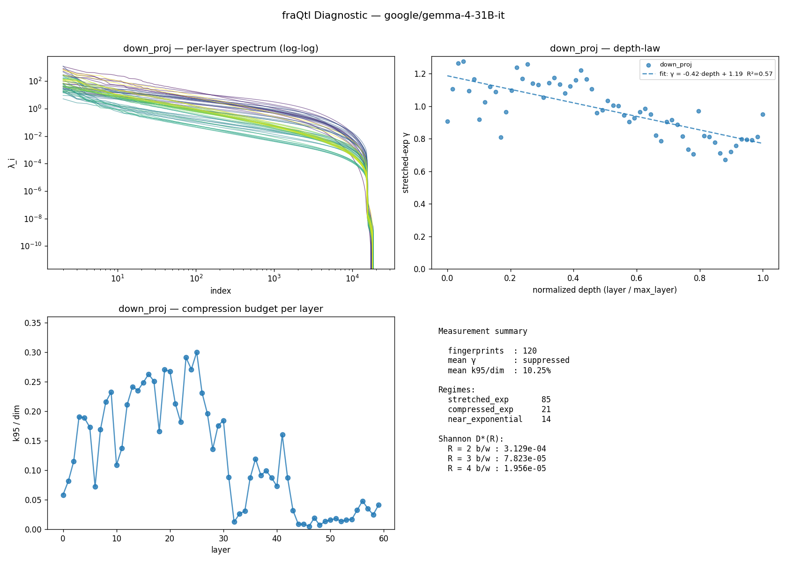

fraQtl Diagnostic — google/gemma-4-31B-it
v0.1.3 ·
60 layers ·
projections: down_proj, o_proj ·
2536.4s on cuda
TL;DR
Mostly normal (some layers unusual) transformer, highly compressible.- 85/120 layers fall in the standard stretched-exponential class (KWW). 35 in other regimes, 0 unfit.
- Effective rank is 10% of dim — rank-reduction compression has room.
- Layers split across multiple regimes — single-number γ is not meaningful. See the per-layer regime column.
This is a measurement tool. For actual compression outcomes, visit https://fraqtl.ai
Measurement summary
| Metric | Value |
|---|
| Fingerprints (layer × projection) | 120 |
| Mean γ (stretched_exp regime, non-poor fits only) | suppressed (>10% layers outside stretched_exp or poor fit) |
| Mean k95 / dim | 10.25% |
| Regimes | 85 stretched_exp, 21 compressed_exp, 14 near_exponential |
| Fit quality | 120 good · 0 moderate · 0 poor |
Shannon rate-distortion ceiling D*(R)
geometric mean over all layers at each bit budget R. Theoretical floor, not a prediction —
the actual PPL a real compressor achieves depends on the recipe (sign correction, rank protection, etc.).
| R (b/w) | D*(R) geomean |
|---|
| 2 | 3.129e-04 |
| 3 | 7.823e-05 |
| 4 | 1.956e-05 |
Depth-law fits
| Projection | Slope | Intercept | R² | γ p10/p50/p90 | n |
|---|
| down_proj | -0.416 | 1.187 | 0.566 | 0.776 / 0.968 / 1.171 | 60 |
| o_proj | -0.448 | 0.873 | 0.321 | 0.433 / 0.553 / 1.042 | 60 |
Per-layer fingerprint (first 40)
| Layer | Proj | dim | γ | regime | fit |
k95 | k99 | knee |
|---|
| 0 | down_proj | 21504 | 0.908 | stretched_exp | good | 1255 | 3130 | 6059 |
| 0 | o_proj | 8192 | 0.723 | stretched_exp | good | 428 | 1297 | 2839 |
| 1 | down_proj | 21504 | 1.106 | compressed_exp | good | 1758 | 4464 | 8421 |
| 1 | o_proj | 8192 | 0.811 | stretched_exp | good | 481 | 1462 | 2952 |
| 2 | down_proj | 21504 | 1.264 | compressed_exp | good | 2476 | 5757 | 8916 |
| 2 | o_proj | 8192 | 0.797 | stretched_exp | good | 682 | 1617 | 2463 |
| 3 | down_proj | 21504 | 1.276 | compressed_exp | good | 4105 | 6829 | 7971 |
| 3 | o_proj | 8192 | 0.611 | stretched_exp | good | 553 | 1308 | 2053 |
| 4 | down_proj | 21504 | 1.094 | near_exponential | good | 4056 | 7042 | 9194 |
| 4 | o_proj | 8192 | 0.563 | stretched_exp | good | 3069 | 5309 | 6435 |
| 5 | down_proj | 21504 | 1.166 | compressed_exp | good | 3721 | 6775 | 9051 |
| 5 | o_proj | 16384 | 1.097 | near_exponential | good | 1840 | 4271 | 7544 |
| 6 | down_proj | 21504 | 0.919 | stretched_exp | good | 1552 | 4044 | 8723 |
| 6 | o_proj | 8192 | 1.184 | compressed_exp | good | 700 | 1979 | 3670 |
| 7 | down_proj | 21504 | 1.026 | near_exponential | good | 3629 | 6739 | 9481 |
| 7 | o_proj | 8192 | 0.844 | stretched_exp | good | 235 | 1049 | 2564 |
| 8 | down_proj | 21504 | 1.121 | compressed_exp | good | 4636 | 7848 | 9692 |
| 8 | o_proj | 8192 | 1.045 | near_exponential | good | 893 | 2256 | 3810 |
| 9 | down_proj | 21504 | 1.088 | near_exponential | good | 5000 | 8255 | 10074 |
| 9 | o_proj | 8192 | 0.839 | stretched_exp | good | 357 | 1254 | 2671 |
| 10 | down_proj | 21504 | 0.811 | stretched_exp | good | 2341 | 5343 | 10788 |
| 10 | o_proj | 8192 | 1.160 | compressed_exp | good | 718 | 2132 | 3841 |
| 11 | down_proj | 21504 | 0.965 | stretched_exp | good | 2948 | 5406 | 8029 |
| 11 | o_proj | 16384 | 0.947 | stretched_exp | good | 958 | 3484 | 8279 |
| 12 | down_proj | 21504 | 1.097 | near_exponential | good | 4544 | 7695 | 9676 |
| 12 | o_proj | 8192 | 0.716 | stretched_exp | good | 175 | 736 | 3108 |
| 13 | down_proj | 21504 | 1.238 | compressed_exp | good | 5198 | 8433 | 9799 |
| 13 | o_proj | 8192 | 0.958 | stretched_exp | good | 1902 | 3765 | 4953 |
| 14 | down_proj | 21504 | 1.170 | compressed_exp | good | 5059 | 8399 | 10075 |
| 14 | o_proj | 8192 | 1.275 | compressed_exp | good | 1677 | 3312 | 4317 |
| 15 | down_proj | 21504 | 1.259 | compressed_exp | good | 5346 | 8468 | 9468 |
| 15 | o_proj | 8192 | 1.041 | near_exponential | good | 662 | 1883 | 3320 |
| 16 | down_proj | 21504 | 1.141 | compressed_exp | good | 5651 | 9191 | 10700 |
| 16 | o_proj | 8192 | 0.541 | stretched_exp | good | 2635 | 4901 | 6152 |
| 17 | down_proj | 21504 | 1.132 | compressed_exp | good | 5397 | 9172 | 10971 |
| 17 | o_proj | 16384 | 0.875 | stretched_exp | good | 1423 | 4639 | 9325 |
| 18 | down_proj | 21504 | 1.055 | near_exponential | good | 3575 | 7302 | 10147 |
| 18 | o_proj | 8192 | 0.538 | stretched_exp | good | 1744 | 4133 | 6213 |
| 19 | down_proj | 21504 | 1.143 | compressed_exp | good | 5819 | 9667 | 11353 |
| 19 | o_proj | 8192 | 1.086 | near_exponential | good | 458 | 1737 | 3484 |
Figures
(generate the PNG with report.to_png(path) — shown here if embedded)

About
This diagnostic measures information-theoretic compressibility from the input covariance
spectrum of each layer. It does not perform compression — it reports the ceiling and
shape. The fraQtl compression engine uses this fingerprint
plus additional engineering (sign correction, per-model calibration) to get closer to the
ceiling in practice.